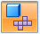
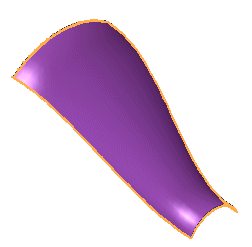
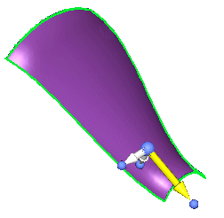
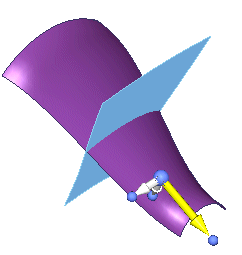
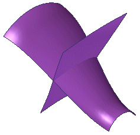

Create a blank surface
-
Select Surfacing tab→Surfaces group→Blank Surface

. -
In the Solid Edge Material Table dialog box, select the Material name you want from the list, and then click Apply To Model.
Note:If a material is already applied to the model, the Solid Edge Material Table dialog box is not displayed.
-
Click to select a tangent face chain.

Note:You can press the S key to select individual faces.
-
Click the handle to define the draw direction for the blank.

-
On the Blank Surface command bar, click Preview to display a preview of the blank along with a dialog box containing information about the surface area of the selected faces and the surface area of the computed blank.

-
On the Blank Surface command bar, click Finish to create the blank.

How do I
Create a blank bodyLearn more
Creating blank featuresLook up more details
Blank Body commandBlank Body command bar
Blank Options dialog box
Blank Surface command
Blank Surface command bar